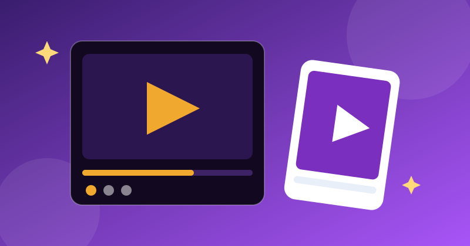

5 Best Free Video Player Apps for Android (2026)

Your phone's built-in player gives up the moment it meets an unusual file — no sound, no subtitles, or a "format not supported" error. We tested the most popular free video players on a mid-range Android phone for one question: which one plays your downloaded videos and movies without fuss, ads, or a paywall?
What we tested
- Format support — MKV, MP4, AVI, plus the audio codecs inside them (AC3, DTS)
- Subtitles — loading an .srt file, syncing it, and changing its size
- Ads & interruptions — whether ads appear before or during playback
- Everyday use — gestures for brightness and volume, playback speed, resume where you left off
1. VLC for Android — best all-rounder
VLC plays almost anything you throw at it — local files, network streams, subtitles in most formats — and it is open-source with zero ads. The interface is plain and its library view is basic, but it never fails on a weird file, and that reliability is why it is still our first pick.
2. MX Player — best gestures and hardware decoding
MX Player's swipe gestures for brightness, volume and seeking are still the smoothest of any player, and its hardware decoding handles heavy files well on older phones. The trade-off is real: the free version shows ads, and removing them needs the paid Pro version. If you can live with ads, the playback experience is excellent.
3. KMPlayer — best for subtitles and playback speed
KMPlayer handles subtitle sync, playback speed control and a wide range of formats, including files other players choke on. The free version also shows ads, and its home screen pushes cloud and streaming features you may never use — but as a pure player with subtitle controls, it earns its place.
4. Nova Video Player — best open-source library player
Nova is a free, open-source player built for phones, tablets and Android TV, with a proper movie library: it fetches posters and descriptions for your files and downloads subtitles automatically. It collects no user data and shows no ads. The catch is that it is a library player, not a file browser — it works best when your videos are organised in folders it can index.
5. Just (Video) Player — best minimal, no-ads player
Just Player is a tiny open-source player built on Google's Media3 (formerly ExoPlayer), with FFmpeg audio support for formats like AC3 and DTS that many players stay silent on. No ads, no tracking, no excessive permissions — and it fixes Bluetooth audio lag properly. The interface is deliberately bare, so if you want a poster-wall library, look at Nova instead.
Quick comparison
| Player | Ads | Subtitles | Best for |
|---|---|---|---|
| VLC | None | Good | Plays anything, no fuss |
| MX Player | Yes (free tier) | Good | Gestures + older phones |
| KMPlayer | Yes (free tier) | Excellent | Subtitle sync + speed control |
| Nova Video Player | None | Auto-download | Movie library + Android TV |
| Just Player | None | Good | Minimal, no ads, rare audio formats |
Note: prices and free-tier features change often — always check the Play Store listing before installing. We never link to cracked or modded apps.